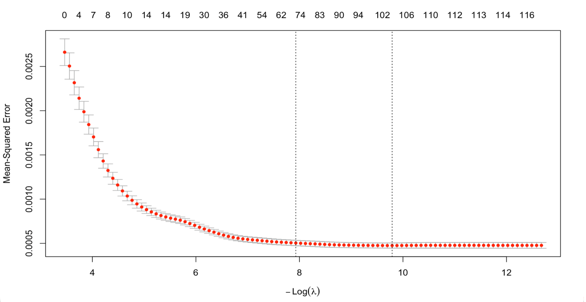
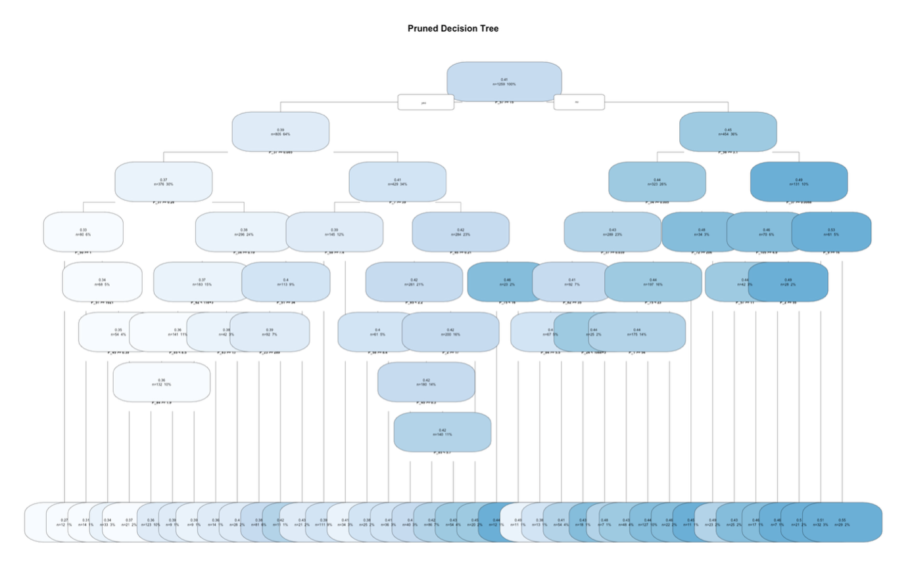
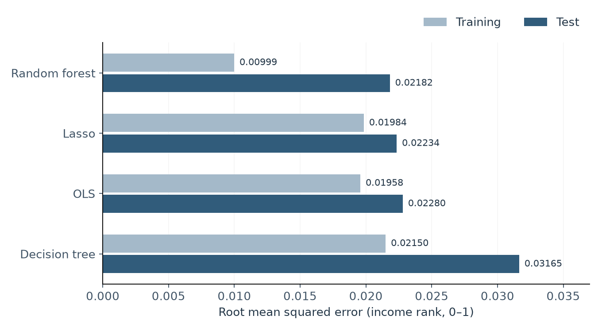
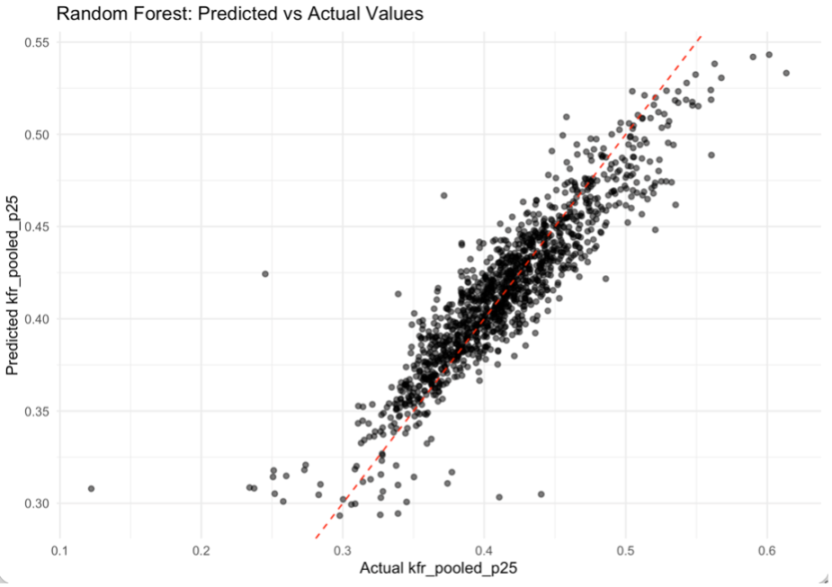
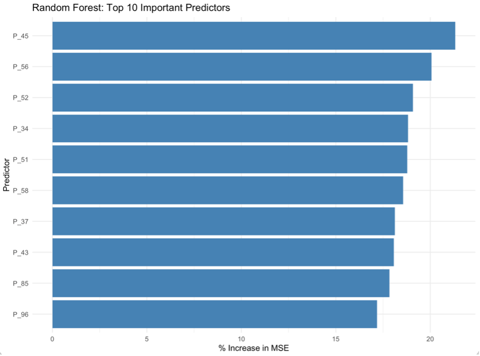

Can We Predict Upward Mobility?
Machine Learning the Geography of Opportunity in the United States
Children from similarly placed families reach different positions in the income distribution depending on where they grow up. This project asks how well county characteristics predict those outcomes. A comparison of four models finds that a random forest has the lowest error on held-out counties, while its advantage over linear alternatives remains modest.
How much of opportunity is predictable?
Counties differ in the adult outcomes reached by children from lower-income families. How much of that variation can be recovered from social, economic, demographic, and health characteristics? This project compares linear, regularized, and tree-based models on counties excluded from fitting. The task is prediction, rather than identifying which characteristics cause mobility.
The comparison asks whether a flexible model finds useful structure beyond an additive account of county conditions. This matters because the predictors describe overlapping aspects of places: economic deprivation, family composition, education, and health need not vary independently. A model can predict well from their combined pattern even when the contribution of any one characteristic is difficult to isolate.
Research on the geography of intergenerational mobility documents substantial differences in children’s adult outcomes across places (Chetty et al., 2014). The Opportunity Atlas extends this perspective by linking adult outcomes to childhood neighborhoods, distinguishing the opportunities associated with growing up in a place from the incomes of the adults currently living there (Chetty et al., 2025). This motivates asking how much information about children’s later outcomes is contained in a county’s broader social and economic profile.
The literature also distinguishes place effects from residential selection. Chetty and Hendren (2018) use childhood exposure following family moves to investigate neighborhood effects. The present county-level prediction exercise has a different design: it compares forecasting performance using observed characteristics, without an exposure-based identification strategy. Accurate predictions therefore do not establish that changing a highly ranked county characteristic would change a child’s outcome.
Counties, childhood origins, and adult income
The Opportunity Atlas maps adult outcomes back to childhood places using linked, anonymized longitudinal records. Developed by researchers at Harvard, Brown, and the U.S. Census Bureau, it provides income outcomes by parental income and geography. The Opportunity Insights data library distributes aggregate estimates and documentation. County characteristics from Data Commons, which brings statistics from multiple public sources into a common framework, add context about local social and economic conditions.
This analysis uses an extract of 2,518 counties with at least 10,000 residents and 121 complete numeric predictors. The outcome is mean adult household-income rank in 2014–2015 for children whose parents were at the 25th national income percentile. It is stored on a 0–1 scale: 0.40 represents the 40th percentile. Counties are the units, so the models do not predict individual children’s incomes.
A random split assigns 1,259 counties to training and 1,259 to testing. Predictors cover poverty, education, household composition, density, and health. Correlations among these measures make the extract useful for comparing regularization with nonlinear models.
The training and test outcome distributions are similar, with means near 0.413 and medians near 0.411. This gives the models broadly comparable prediction tasks. The complete predictor fields also keep differences in missing-data exclusions from driving the comparison. Similar outcome distributions, however, do not establish that a model will transfer to a geographically distinct set of counties.
A common task, four prediction models
OLS uses all predictors as a linear benchmark. Lasso shrinks coefficients and uses ten-fold cross-validation to choose a penalty. A regression tree is pruned at the complexity parameter minimizing ten-fold validation error. A random forest averages 1,000 trees, with 10 candidate predictors per split and a minimum node size of five.

View full-size figure
{kind=link}

View full-size figure
{kind=link}
The Lasso curve shows the tradeoff between stronger shrinkage and predictive fit. The minimum-error penalty retains many coefficients, suggesting that useful information is distributed across multiple county measures. The tree represents a different compromise: successive thresholds create groups of counties with a common terminal-node prediction. Averaging many trees allows the forest to smooth these individual partitions.
The forest leads, with a modest margin

View full-size figure
{kind=link}
The forest’s test RMSE is about 2.18 percentile-rank points, compared with 2.23 for Lasso and 2.28 for OLS. Its advantage over Lasso is only about 0.052 percentile-rank points. This single split does not establish a statistically reliable performance difference.
The forest’s much lower training error does not translate into an equally large test advantage. The single tree has the highest test error, illustrating that flexible partitions alone do not guarantee generalization.

View full-size prediction figure
{kind=link}
The scatterplot helps interpret the forest’s average error. Predictions track the middle of the observed range more closely, while the lowest and highest outcomes tend to be pulled toward the center. A small overall RMSE can therefore coexist with less accurate predictions for unusually low- or high-mobility counties—the places where an individual prediction may attract the most attention.
What information does the forest use?
The forest ranks the share of single-headed households with children in 2000 (P_45) first, followed by mentally unhealthy days (P_56) and population density in 2000 (P_52). Other leading predictors concern demographic composition, low birthweight, household structure, and religious composition.

randomForest::importance(), which scales permutation-based increases in out-of-bag error by their variability by default. Despite the “% Increase in MSE” label, the displayed scores should not be read as literal percentage changes or causal effects.View full-size importance figure
{kind=link}
P_34 and P_37 denote Black population shares in 2010 and 2000; P_51 is density in 2010; P_58 is low-birthweight births; P_43 is single-headed households with children in 2006–2010; P_85 and P_96 concern Roman Catholic congregations and historically Black Protestant membership.
Importance locates predictive information among interrelated county characteristics. It does not establish that a demographic attribute, household arrangement, or health measure independently determines a child’s prospects.
Permutation importance asks how much predictive accuracy deteriorates when a variable’s information is disrupted. It answers a different question from a regression coefficient, which describes a conditional linear relationship. Strongly correlated household or health measures can share predictive information, so neither a low rank nor a large score provides a clean assessment of a variable’s independent substantive importance.
Prediction and its limits
Linear models recover much of the predictive signal, while the forest offers a small additional improvement. Correlated predictors and importance metrics complicate interpretation, and county averages conceal variation within places and across children.
Test outcomes were inspected during preliminary exploration, so evaluation was not fully blind. The comparison uses one random split, no geographic holdout, and predictors from different years: it is a retrospective prediction exercise. Spatial and repeated validation would help assess whether the modest performance differences persist elsewhere.
A useful next comparison would combine repeated or spatial holdouts with tuning of the forest and alternatives such as elastic net for correlated predictors. These would test whether the small ranking differences survive changes in evaluation design. They are extensions to the current comparison, rather than additional validation already established by its results.
The multidimensional predictive pattern is consistent with the geographic perspective motivating the Opportunity Atlas (Chetty et al., 2025). County averages nevertheless combine distinct neighborhoods and family circumstances. A modest improvement in predicting those averages should be interpreted alongside that aggregation, rather than as a ranking of interventions for individual children.
References
Chetty, R., Friedman, J. N., Hendren, N., Jones, M. R., & Porter, S. R. (2025). The Opportunity Atlas: Mapping the childhood roots of social mobility (Working Paper No. 25147, revised December 2025; originally issued 2018). National Bureau of Economic Research. http://www.nber.org/papers/w25147
Chetty, R., & Hendren, N. (2018). The impacts of neighborhoods on intergenerational mobility I: Childhood exposure effects. The Quarterly Journal of Economics, 133(3), 1107–1162.
Chetty, R., Hendren, N., Kline, P., & Saez, E. (2014). Where is the land of opportunity? The geography of intergenerational mobility in the United States. The Quarterly Journal of Economics, 129(4), 1553–1623.